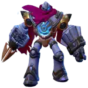

Pronto para dominar o campo de batalha com estilo e elegância? Conheça Zetian, a Imperatriz de Shendu, que combina magia em área (AoE) devastadora com controle de grupo, sendo ainda uma das magas mais fáceis de aprender e jogar! Seja você iniciante em Mobile Legends ou esteja buscando uma maga poderosa para a rota do meio com alto impacto e baixa complexidade, Zetian pode ser sua nova heroÃna favorita.
Seu estilo de jogo gira em torno de limpar ondas de minions, atacar inimigos à distância e executar combos explosivos com facilidade. Apesar de sua durabilidade ser mediana, a facilidade de uso e sua capacidade de zonear inimigos a tornam muito acessÃvel para iniciantes e uma escolha confiável em partidas ranqueadas.
Não se esqueça: sua passiva Arma Celestial concede escudo e proteção contra empurrões se inimigos se aproximarem demais. Use sua torre como zona segura e só comece a rotacionar para outras rotas após alcançar o nÃvel 4 e desbloquear a Fúria da Fênix. É aà que você se torna uma ameaça real!
Nas lutas em equipe, Zetian brilha quando fica atrás da linha de frente. Sua Fúria da Fênix pode mudar o rumo da batalha use-a quando vários inimigos estiverem agrupados para atordoá-los e revelar suas posições. Comunique-se com o time antes de iniciar para maximizar o impacto.
Lembre-se: mesmo que você não consiga abates, você contribui com lentidão, revelações, atordoamentos e redução de dano. Toda ação conta!
No fim do jogo, Zetian se torna uma poderosa maga de controle de área. Fique sempre com seu time e evite entrar sozinho na selva ou nas rotas laterais um erro pode custar a partida!
Nas lutas completas, posicione-se na retaguarda e execute seu combo: Mergulho da Fênix ✠Golpe da Fênix ✠Fúria da Fênix. Se for bem sincronizado, você enfraquece toda a equipe inimiga para seus aliados finalizarem.
Ao avançar nas rotas, use o Golpe da Fênix para eliminar super minions rapidamente e apoiar o cerco final. E não se esqueça: seu roubo de feitiço pode manter sua vida durante as lutas, especialmente se os inimigos não conseguirem se aproximar.
Prioridade de Evolução das Habilidades da Zetian - Mobile Legends: Bang Bang
É novo com a Zetian? Aqui está um guia amigável de evolução de habilidades para te ajudar a ficar mais forte e fazer melhores escolhas em cada partida.
Habilidade Fúria da Fênix, Mobile Legends: Bang Bang.
Melhores Combos da Zetian - Mobile Legends
Descubra os combos de dano mais poderosos da Zetian em Mobile Legends, perfeitos para dominar as lutas em equipe e controlar a Rota do Meio com facilidade.
Combos para Lutas em Equipe
Passo 1: Fúria da Fênix
Inicie a luta usando sua Ultimate. Ela acelera todo o seu time e atinge todos os inimigos com um poderoso ataque em área (AoE) que os atordoa. Isso dá à sua equipe a oportunidade de iniciar o combate enquanto os inimigos estão lentos e vulneráveis.
Passo 2: Mergulho da Fênix
Logo após a Ultimate, invoque o EspÃrito da Fênix com a Habilidade 2 para desacelerar os inimigos e reduzir sua Defesa Mágica. Isso os torna alvos mais fáceis para seus aliados e aumenta seu dano total.
Passo 3: Golpe da Fênix
Lance o Golpe da Fênix enquanto se move para se manter seguro e continuar pressionando. Essa habilidade atinge três vezes consecutivas e puxa os inimigos levemente no último golpe, dificultando a fuga deles.
Passo 4: Mergulho da Fênix (Reutilização)
Se os inimigos tentarem fugir, use a reutilização da sua segunda habilidade para enviar o espÃrito da Fênix atrás deles. Isso aplica outro efeito de lentidão e causa dano extra muitas vezes garantindo a eliminação.
Combos para a Fase de Rotas
Passo 1: Mergulho da Fênix
Comece posicionando o EspÃrito da Fênix próximo ao seu oponente de rota. Isso o desacelera e reduz sua Defesa Mágica, o que aumenta o dano dos seus próximos ataques.
Passo 2: Golpe da Fênix
Em seguida, use o Golpe da Fênix. Lance a habilidade enquanto se reposiciona isso ajuda você a se manter móvel enquanto aplica forte dano em área. Tente acertar o inimigo com todas as três ondas.
Passo 3: Mergulho da Fênix (Reutilização)
Se o inimigo tentar sair da área do espÃrito, use a reutilização da habilidade para lançar a Fênix diretamente sobre ele. Isso aplica mais uma lentidão e causa um último golpe de dano. Ótimo para zonear ou forçar o recuo.
Como Counterar Zetian em Mobile Legends
Descubra os melhores heróis para neutralizar Zetian explorando suas fraquezas em posicionamento, conjuração de habilidades e limitações de mobilidade.
Atlas

Atlas pode mergulhar diretamente na retaguarda da Zetian com o Perfect Match e prendê-la com Fatal Links, interrompendo sua conjuração e ignorando o empurrão passivo dela graças à imunidade a controle de grupo durante o combo.
Gusion consegue eliminar Zetian antes mesmo que ela reaja, usando seu combo rápido (Sword Spike + Incandescence). Os escudos dela não são fortes o suficiente para resistir ao seu alto dano explosivo de alvo único.
Lancelot consegue atravessar as zonas de dano da Zetian com Puncture e Thorned Rose, eliminando-a rapidamente antes que ela finalize suas conjurações. Sua mobilidade anula o efeito de empurrão da passiva dela.
Saber
O Triple Sweep do Saber pode eliminar instantaneamente a Zetian antes que ela ative seu escudo ou controle de grupo. Sua capacidade de isolar alvos frágeis o torna uma ameaça direta à sobrevivência dela.
Aumente o dano mágico em área (AOE) da Zetian, a eficiência de recarga e sua sobrevivência com a build ideal para dominar todas as fases da partida.
Botas Arcanas
Botas Arcanas: Aumentam a velocidade de movimento e concedem Penetração Mágica para ajudar Zetian a causar mais dano no inÃcio do jogo.
Livro Mágico
Livro Mágico: Excelente item de inÃcio de jogo para redução de recarga e regeneração de mana, permitindo que Zetian use habilidades com mais frequência sem ficar sem recursos.
Relógio do Destino
Relógio do Destino: Fornece aumento gradual de HP e Poder Mágico, tornando Zetian mais resistente e aumentando seu potencial de dano explosivo conforme o jogo avança.
Cristal Mágico
Cristal Mágico: Maximiza o Poder Mágico bruto e amplifica todo o dano das habilidades da Zetian, sendo especialmente eficaz em lutas de meio e fim de jogo.
Varinha Brilhante
Varinha Brilhante: Adiciona dano contÃnuo baseado no HP do inimigo, ideal para poke e para causar dano constante em tanques ou heróis com regeneração.
Glaive Divina
Glaive Divina: Destroi a defesa mágica inimiga, essencial contra composições tanques ou inimigos com itens de resistência mágica.
Prós e Contras da Zetian – Mobile Legends: Bang Bang
✅ Prós
Excelente dano mágico em área com forte limpeza de rota.
Habilidade passiva causa recuo, atordoamento e concede escudo, oferecendo defesa natural contra atacantes corpo a corpo.
Grande potencial de roubo de feitiço (spell vamp), garantindo sustentação em lutas prolongadas.
Ultimate concede controle de grupo global e aumento de velocidade de movimento para o time, ideal para lutas em equipe.
Baixa dificuldade de uso, sendo acessÃvel para jogadores iniciantes.
⌠Contras
Baixa mobilidade e sem habilidade de escape confiável, tornando-a vulnerável a assassinos.
Ultimate tem tempo de recarga longo e pode ser anulada ou copiada (ex.: por Valentina).
Depende fortemente de bom posicionamento e consciência de mapa para não ser pega desprevenida.
O escudo e os efeitos da passiva têm tempo de recarga, deixando brechas de vulnerabilidade.
Requer bom timing para usar o segundo cast de Mergulho da Fênix de forma eficaz.
Você gostou do nosso Guia de #################? Há algo que não entendeu ou gostaria de sugerir mudanças? Convidamos você a se juntar à nossa sessão de comentários na página do Alexandre Games Blog. Não hesite em expressar sua opinião, clarificar suas dúvidas e compartilhar sua sugestões. Clique no botão abaixo para começar:


 Guia do Julian em Mobile Legends
Guia do Julian em Mobile Legends
 Guia do Lukas em Mobile Legends
Guia do Lukas em Mobile Legends